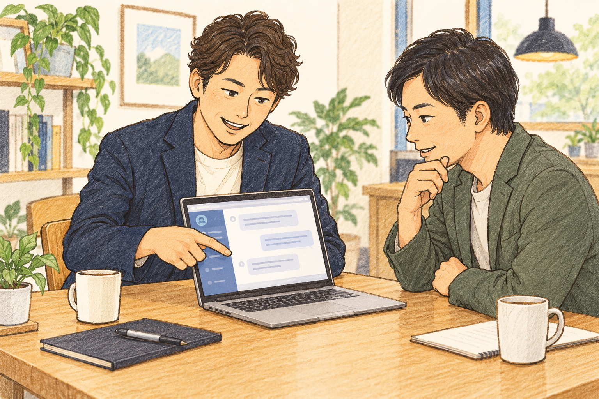
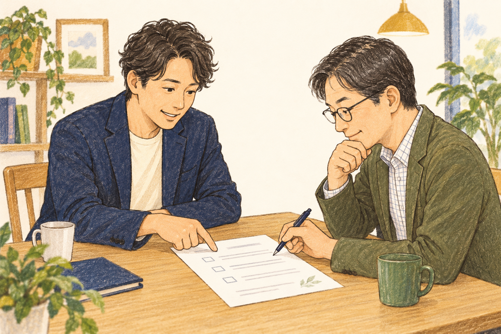
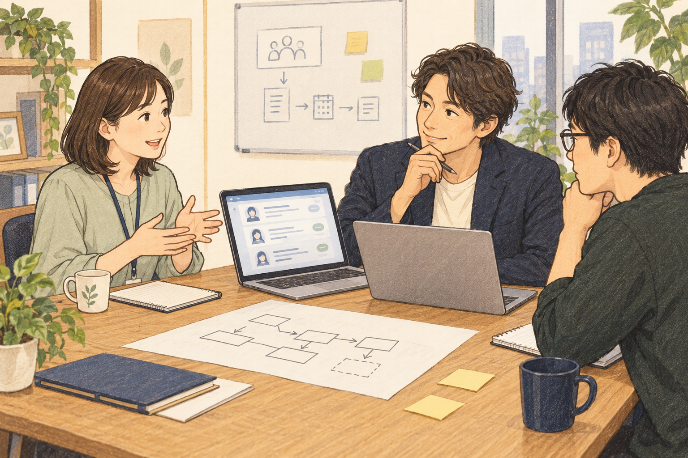
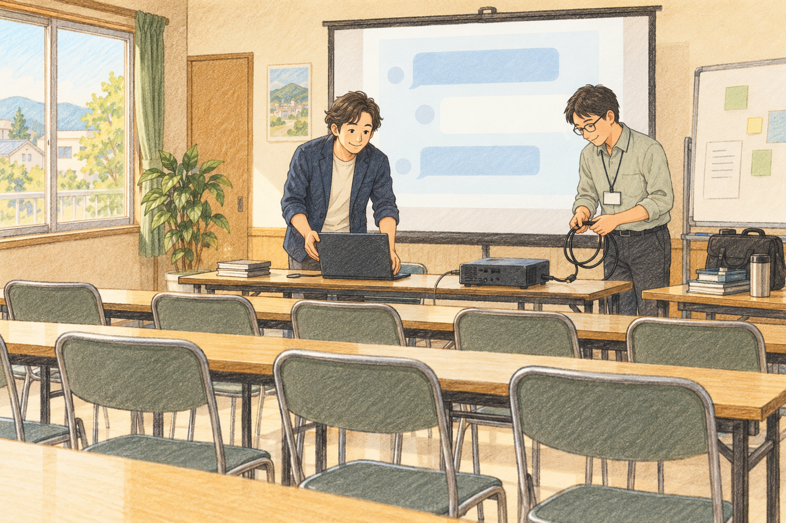

相手を見つける
- Gmailから営業リストを作る
過去のメールから接点を見つけ、相談内容と一緒に一覧にする。
- 相手に合う連絡のきっかけを考える
以前の相談や会話を振り返り、今提案できる理由を整理する。
小説｜M社代表のストーリー
「反応はいいのに、発注が来ない」から始まる、M社代表の物語。
AIを使うたび、できることが増えていく。1〜6か月と、その先を描いた架空の物語です。
M社代表のストーリー。実在企業の実績ではなく、打ち合わせ用の架空の読み物です。料金・成果条件は物語の設定です。差し絵は生成イメージです。
うちの会社で正社員は私ひとり。地域の企業から採用の相談を受け、求人票の書き直しや、面接で何を聞くかの整理を手伝ってきた。AIOの60IDを仕入れたときは、これなら売れると思った。ところが、いざ声をかけようとすると手が止まる。誰に、何と言えばいいのだろう。思い浮かぶのは、最近会った数人の顔ばかりだった。
そこで、AIを使ってGmailの過去のやり取りを整理してみた。以前採用の相談を受けた会社、見積りを出したまま話が止まっている会社、交流会のあとにお礼を送った社長。相手の名前だけでなく、最後に話したことと、今なら声をかけられそうな理由も一覧にする。候補を一つずつ読み返すと、「ここは若手の応募を増やしたいと言っていた」「この社長には、求人ページの話から入れそうだ」と思い出した。新しい名簿を買ったわけではない。自分のメールの中に、次の仕事につながる接点が眠っていた。
何社かに連絡し、商談では仕入れ元の資料を開いて機能を説明した。AI検索、情報の整備、引用の確認、計測。社長はうなずき、「それ、気になるね」と言ってくれる。ところが最後は「面白いですね。もう少し考えます」。手帳には「好感触」が並ぶのに、契約欄は空白のままだった。
夜、商談メモを読み返すと、顧客は採用の困りごとを話しているのに、私は覚えた機能を説明していたことに気づいた。営業はまだうまくいかない。でも、「誰に連絡したらいいか分からない」という最初の壁は越えた。机の上の営業リストを見て、以前なら後回しにしていた作業を、自分で一つ片づけられた気がした。
この月のまとめ｜できるようになったこと
仕入れ元の担当者に「興味は持ってもらえるのに、発注まで進みません」と相談した。返ってきたのは、「次は、お客さまの前でChatGPTを開いてみませんか」という言葉だった。画面に自社の名前が都合よく出る保証はない。それでも、同じ画面を見て採用の話をする方が、機能を並べるより分かりやすいと思った。
次の商談は、若い人の応募が少ない製造業の会社だった。「未経験の人なら、応募前に何を気にするでしょう」。社長の答えは、仕事内容、研修、残業、職場の雰囲気。その言葉をもとに、求職者が確認したいことをChatGPTで整理し、会社の採用ページと見比べた。研修の説明も、一日の仕事の流れも載っていない。「現場ではちゃんと教えているのに、外からは分からないんですね」。その一言で、商談の空気が変わった。
「AIの回答や掲載を保証するものではありません。まず、求職者が知りたい情報を整えるところから始めませんか」。社長は画面を指して、「ここは、うちの社員にも聞いてみたい」と言った。私は説明する人から、一緒に確かめる人になっていた。
帰社後、商談メモからお礼と確認事項のメールをAIで下書きし、社長の言葉に合わせて直して送った。課題を聞く、画面で確かめる、提案する、メールで次の行動を決める。初めて、自分なりの営業の順番ができた。数日後、最初の発注をもらった。うれしかったのは受注だけではない。これまで仕入れ元の説明を聞いていた私が、今度は顧客の前でAIを動かしていた。
この月のまとめ｜できるようになったこと

別の顧客から「AIOはもう他社にも案内されたよ」と言われた。月30万円固定のコンサル料金だという。私はM社として用意した成果報酬型の提案を出した。ただ「成果が出たら払ってください」では、お互いに違うものを想像してしまう。何を成果として数え、どの記録で確かめ、いつ費用が発生するのか。仕入れ元に確認した内容を踏まえ、M社の条件を整理した。
今回は、商談メモと条件のメモをAIに渡し、提案書の構成を作ってみた。最初の案には、相手が話していない悩みまで書かれていた。「そこは違う」と削り、社長が何度も口にした「何を確認できるのか」を冒頭に置く。AIに丸ごと任せるより、自分が聞いた話を材料に直す方が、相手に合う提案になると分かった。
「問い合わせが増えたら、全部AIOの成果になるの？」。そう聞かれて、広告や紹介の影響もあること、確認する記録と数え方を先にそろえたいことを説明した。「成果が出なければ、そちらも困るでしょう」「はい。だから最初に条件を決めたいんです」。社長は少し驚き、「それは誠実ですね」と言った。発注の連絡が来たのは、その後だった。
聞かれた質問と自分の答えを残し、次の提案に使えるFAQにまとめた。資料を作るたびに、真っ白な画面から始める必要がなくなった。前の商談で考えたことが、次の仕事を助けてくれる。ひとりで働いているのに、手元の道具が少しずつ増えていく感覚があった。
この月のまとめ｜できるようになったこと

AIOの相談をしていた会社から、「求人ページを含めて、サイトをリニューアルしたい」と連絡が来た。今のサイトには事業紹介はあるが、働く人の姿が見えないという。以前なら「私はWeb制作会社ではないので」と答えていたと思う。けれど、どんな人を採りたいか、何が伝わっていないかは、これまでの相談で知っていた。「まず、載せたいことを一緒に整理しましょう」と言えた。
社長と社員に話を聞き、仕事内容、研修、一日の流れ、社員の声、応募までの手順をメモにした。それをAIでページの構成案と原稿の下書きにする。「ここは、研修の話が先の方が安心する」「この言い方だと、実際の仕事より簡単に見えてしまう」。顧客と直しながら、見せたい順番が決まっていった。文章だけだった相談が、サイトの形になり始めた。
仕入れ元に制作体制を確認し、制作担当者につないだ。私は採用で伝える内容と顧客の要望を整理し、制作側はデザインと実装を進める。写真や社員の声を集め、原稿の確認日を決め、できあがった画面をスマホでも一緒に見る。応募ボタンが見つけやすいか、仕事の説明に抜けがないか。完成するまで、顧客と制作担当者の間で確認を進めた。
公開された採用サイトを見て、社長が「うちで働く感じが、前より伝わるね」と言った。自分が全部を作ったわけではない。でも、企画と原稿づくりを手伝い、相談を完成まで運べた。AIOを案内するだけだった私が、顧客の採用サイトにも関われるようになった。その日の帰り道は、初月の「好感触」とは違う手応えがあった。
この月のまとめ｜できるようになったこと
次に届いたのは、応募者情報の管理を変えたいという相談だった。応募者の一覧は表計算、面接日程はメール、評価は担当者ごとのメモ。「どこまで連絡したか分からなくなることがある」と採用担当者が言う。今度はシステムの話だ。さすがに身構えたが、採用サイトのときと同じように、まず仕事の流れを聞くことならできると思った。
応募受付から面接、評価、採否の連絡まで、誰が何をしているかを順番に聞いた。メモをAIで業務フローの図にし、項目名と架空の例で、応募者一覧の画面案も作る。担当者に見せると、「ここで同じ内容を二回入力しています」「面接官には、この項目だけ見せたい」と具体的な話が出てきた。私には作れないシステムでも、何を作りたいのかは一緒に整理できた。
必要な機能、使う人数、移したいデータ、まだ分からないことを一枚にまとめ、AIで概算見積りの相談に必要な質問も洗い出した。そのメモを仕入れ元に渡し、開発担当者と対応範囲を確認する。正式な仕様と見積りは、担当者の確認を経て顧客へ伝える。まだ受注には至っていないが、「システムが欲しい」という漠然とした相談を、検討できる案件に変えられた。
打ち合わせの終わりに、採用担当者が「ここまで整理してもらえると、社内でも説明しやすいです」と言った。私は開発者になったわけではない。顧客の仕事を聞き、AIで見える形にし、専門の人につなぐ。その役目も、自分の仕事にしていいのだと分かった。
この月のまとめ｜できるようになったこと

最初にAIOを発注してくれた社長と、導入後の記録を見返した。採用ページがどれだけ見られたか、どんな問い合わせが来たか。求人広告や紹介の影響もあるので、変化をすべてAIOの効果とは言い切れない。それでも、次にどの情報を足すかを、一緒に決められるようになった。帰り際、その社長から「今度、知り合いにもAIの使い方を教えてくれない？」と言われた。
何社かで集まって話すなら、勉強会にしてはどうだろう。私は仕入れ元のライトアップに、地元向けのAI勉強会で講師をお願いできないか相談した。自分は主催と進行を担当し、講師にはAI活用の考え方やデモをお願いする。テーマは、営業先の探し方、お礼メール、求人票の書き直し。自分がこの半年で試したことなら、参加者がどこで迷うかも想像できた。
会場は、自治体が用意する地域のセンターに決めた。利用手続きと設備を確認し、パソコンをつなぐ場所、受付の机、席の並べ方をメモする。AIで告知文と申込フォーム、当日の進行案を作った。過去の接点のリストから声をかけ、商談先にも案内する。最初は席が埋まるだろうかと落ち着かなかったが、今のところ30名の地元の経営者が来てくれることになっている。
まだ開催前だ。当日の挨拶を練習すると、どうしても少し声が上ずる。半年前は、自分が誰に連絡するかで迷っていた。その私が、講師を招き、会場を用意し、地元の社長たちを迎える準備をしている。すべてを一人で教える必要はない。自分が試してきたことを話し、詳しい人の力も借りて、みんなが仕事に使える場をつくる。こんな役目までできるようになるとは、思っていなかった。
この月のまとめ｜できるようになったこと

勉強会の準備をしていると、「当日までに、うちの求人票を一度見てもらえますか」「営業メールでも使えるんですよね」と連絡が来るようになった。AIOの説明を聞きたいだけではない。自分の仕事で何から始めればいいか、私と話してみたいと言ってくれる。「困ったら、まずAIおじさんに聞こう」。いつの間にか、そんなふうに呼ばれるようになった。
求人票なら、仕事内容のメモから分かりやすい下書きを作れる。営業なら、過去の接点を探し、相手に合う連絡文を考えられる。サイトの相談なら、載せる内容と構成を整理できる。システムの相談なら、業務フローを見える形にし、開発担当者と話す材料を用意できる。初めての相談でも、「全部分かります」と言う必要はない。「そこまでは一緒に整理できます。その先は、詳しい人に確認しましょう」と言えるようになった。
正社員は今も私ひとり。夜、ノートの最初のページにあった「誰に連絡するか」の文字を見つけた。その下に、今できることを書き足していく。リストづくり、営業デモ、提案書、採用サイトの企画、開発の相談、勉強会の主催。受注の数字も大事だ。でも、以前なら断っていた相談を、今は次の一歩へ進められる。その違いは、毎日の仕事の中で実感していた。
AIが勝手に自分を変えたわけではない。顧客の話を聞き、試し、うまくいかなかったところを直し、ときには仕入れ元や専門家に助けてもらった。そのたびに、できることが一つずつ増えた。ノートを閉じる前に、勉強会の進行案をもう一度開く。今度は、地元の社長たちが「これなら自分にもできそうだ」と思える番だ。
その先のまとめ｜できるようになったこと
最初は、誰に声をかけるかさえ迷っていた。今は、顧客の相談に合わせて使える道具と、頼れる人がいる。
過去のメールから接点を見つけ、相談内容と一緒に一覧にする。
以前の相談や会話を振り返り、今提案できる理由を整理する。
顧客と同じ画面を見ながら、その会社の課題を具体的に話す。
商談メモから文面を下書きし、次にすることまで確認する。
聞いた課題、提案内容、確認条件を相手に合わせてまとめる。
商談で聞かれたことを残し、次の説明や提案に使う。
取材メモから、ページの構成案や原稿の下書きを作る。
素材集め、原稿確認、画面の確認を、完成まで調整する。
今の作業を聞き、図や画面のたたき台にして確かめる。
機能、使う人数、必要なデータ、未確認点を専門家に渡す。
記録を見比べ、次に何を改善するか一緒に決める。
ライトアップに協力を相談し、会場と役割分担を決める。
AIで告知文、申込フォーム、進行案を作り、参加者を迎える。
目の前の仕事から一つ選び、試して、必要な専門家につなぐ。
一つできるようになると、次の相談を受け止められる。できることが増えるたび、顧客との話し方も、自分の仕事の見え方も変わっていった。